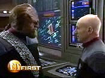
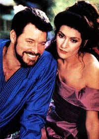
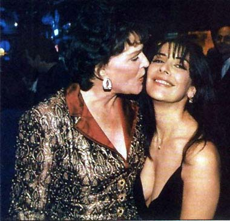
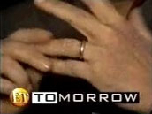
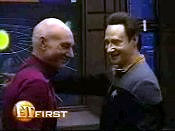

|
"Nmesis"
e a frmula do sucesso
 "Nmesis"
j parece ser um sucesso de realizao da Paramount --pelo menos
j rene algumas caractersticas importantes, segundo a lgica
que rege Holywood. Os produtores no pretendem arriscar muito num
filme que, segundo especulaes, poder ser o fechamento das
aventuras da Nova Gerao, embora o prprio Stewart tenha
negado ultimamente. "Nmesis"
j parece ser um sucesso de realizao da Paramount --pelo menos
j rene algumas caractersticas importantes, segundo a lgica
que rege Holywood. Os produtores no pretendem arriscar muito num
filme que, segundo especulaes, poder ser o fechamento das
aventuras da Nova Gerao, embora o prprio Stewart tenha
negado ultimamente.
No
plano interno, o estdio contratou John Logan, um roteirista de
prestgio, que ajudou bastante nos prmios recebido por
"Gladiator". Stuart Baird, o diretor, tambm
experiente, algum que conhece o ofcio; antes, tivemos David
Carson e Jonathan Frakes (William Riker), que dirigiram bons episdios
na televiso, da, foram escolhidos para apresentar as aventuras
do pessoal da Frota Estelar no cinema.
Eles conseguiram um sucesso razovel, principalmente no caso de
Frakes, com "Primeiro Contato". Mas, mesmo com o hbito
de passar habilidosamente tcnicas de televiso para o cinema,
sempre melhor contar com algum capaz de dominar bem a narrativa da
tela grande. Esse um procedimento considerado vlido para atrair
os bons olhos da crtica e do pblico mais exigente, fazendo
render maior prestgio e retorno financeiro para a franquia e o estdio.
No plano externo, onde habitam os fs, alguns ingredientes so de
fato um atrativo seguro para garantir a alegria de todos. A dvida
com os trekkers ser paga no roteiro sobre o povo Romulano. H
muito tempo j se cobrava o desenvolvimento de uma histria
baseada num dos "inimigos" tradicionais da Federao,
que apareceram quase casualmente, com personagem isolados, sem
nenhuma influncia na trama.
 Ao
contrrio, agora poderemos ver os Romulanos com mais profundidade.
Foi bem acertada a escolha de mostrar um lado do Imprio at ento
desconhecido para que acompanhou A Nova Gerao e Deep
Space Nine. A tem outro elemento de segurana para fazer o
espetculo continuar de acordo com o figurino: uma grande crise no
Imprio Romulano, que traz como conseqncia um novo modo de
relacionamento com a Federao.
Esta frmula j foi usada com os Klingons, em "Jornada nas
Estrelas VI: A terra Desconhecida". Agora, os descontentes
so um grupo de pessoas oprimidas em busca de liberdade. Isto
atraente ao pblico, conforme j se viu em vrias aventuras no
cinema e na televiso. No universo de Jornada, a aceitao do
tema j veio em episdios da Srie Clssica, como "The
Apple", "Errand of Mercy" e "The
Cloudminders". O assunto foi desenvolvido da para frente
nas outras sries da turma da Frota Estelar. A presena de Logan,
contudo, ajuda a pegar carona no tema no argumento de Gladiador.
 Outro
elemento que trata contentamento aos fs o sempre to esperado
desfecho do caso amoroso entre os dois pombinhos auxiliares de
Picard. Riker e Troi, enfim, vo se unir pelos laos do matrimnio,
apesar das especulaes sobre a ausncia de Lwaxana Troi, talvez
j morta, com as graas do produtor e chefo de todas as coisas
de Jornada, Rick Berman. Da, poderemos ver que pelo menos
algum se importa em viver de um jeito mais prximo dos mortais e
seus romances.

 O
casamento entre os personagens "da ponte" se tornou mais
comum em DS9 e Voyager, contribuindo, assim, para o
gosto do padro que sempre alegra o pblico apelando para um
"parzinho" romntico.
A presena de um irmozinho "deficiente" de Data tambm
uma forma de mostrar que Jornada se preocupa com questes
que afligem o ser humano, como j fizeram antes no caso de
deficientes fsicos e visuais. Este um ponto que toca na
sensibilidade de todos considerados "normais", fazendo com
que eles vejam os outros com dignidade, respeito e solidariedade,
sem cair no pieguismo hipcrita e no preconceito. Vale para manter
uma herana do clima politicamente correto assumido pelo seriado
desde o seu incio.
 Para
os fs preocupados com o destino de Data, a transferncia de sua
capacidade cerebral direto ao circuito do outro andride pode
funcionar como um modo aceitvel de seu "desligamento" e
possvel despedida.
O estdio optou ainda por afastar o fracasso, retomando o tema do
vilo geneticamente engendrado para ser o antagonista do capito
heri. Tal como em "Jornada nas Estrelas II: A Ira de
Khan", veremos algumas nuances desse tipo de relacionamento
entre Shinzon e Picard. Eu j falei aqui em outro texto que isto
reencarna o hbito do capito enfrentar a si mesmo, de modo
figurado ou no. Ser que no daria para tentar algo um pouquinho
diferente daquilo mostrado no cinema, nos episdios da Srie Clssica
e da Nova Gerao? Ter Picard vendo "aquele que sou eu
sem nunca ter sido" vai funcionar, mas poder ser a falta de
originalidade misturada com as caractersticas de "O Clone
Assassino".
melhor acabar por aqui mesmo e esperar que a Paramount apresente
algo diferente no futuro, sem essa de fazer um episdio tamanho famlia
que nos obrigue a gostar somente das histrias conhecidas. Talvez
possamos um dia ver o estdio seguir o lema de seu produto
"indo audaciosamente onde ningum jamais esteve".
Cludio
Silveira escreve regularmente sobre os filmes com
exclusividade para o Trek Brasilis
|